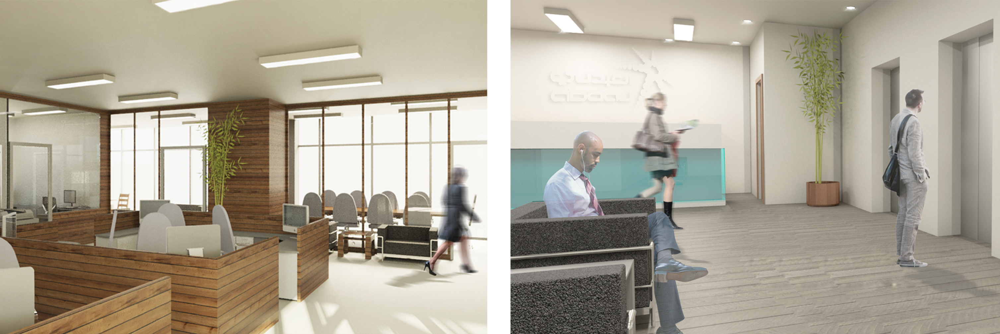

Mixed-use Office Building
Year | Spring 2015 | 3rd Year BSc.
Type | Mixed-use Office

The challenge came to reinvent the office building in relation to facilities and the highly contradicting environment on the basis of structuralism in a contemporary society. The concept was to create an office building that has both functions ( offices - commercial ) intersecting in a way that would allow for more social inclusion, accessibility and fulfillment of psychological needs.
The building floors integrate between both functions to create a harmoniously, diverse and interesting circulation for the users. As well as having multipule outdoor landscaping on some levels and on the building entrance floor.
The project is located in Al-Abdali project area in Amman which is considered one of the most controversial areas in the city in which old and new structures collide.